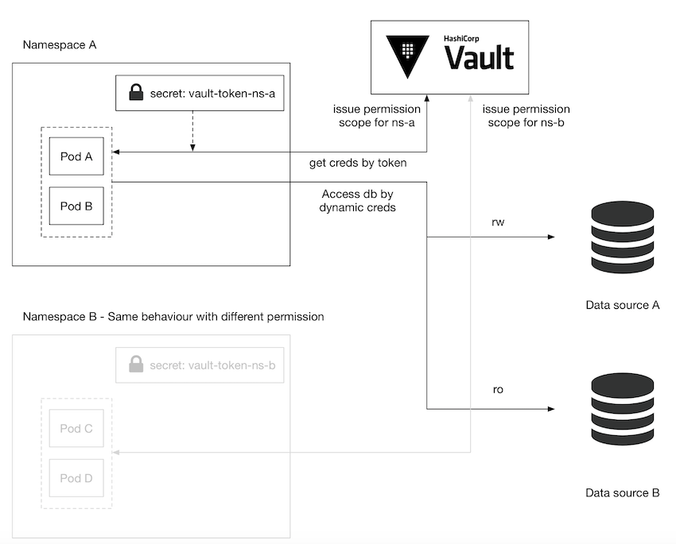
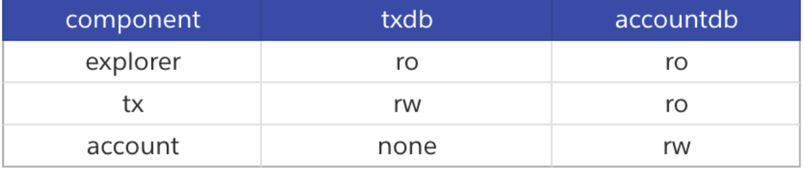
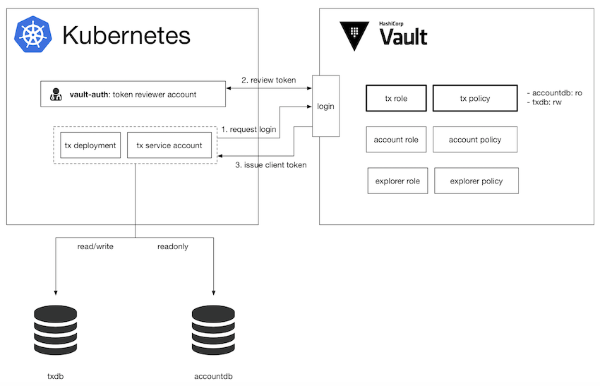

L4 Vault 与 Kubernetes 的深度整合
本篇文章则更进一步的解释要如何透过 Kubernetes 的 Service Account 整合登入验证，并且针对不同 Account 管理权限范围让特定 deployment 仅能存取特定 credentials。
使用情境与问题
前篇文章我们介绍了要如何用 vault 发出 dynamic credential 增强安全性，而当服务变复杂时，每个服务都会有针对不同 credentials 有不同的存取权限的需求。此时在 vault管理时就会需要用不同的 policy 来管理不同范围的权限。
而如果服务是架设在 Kubernetes 时，又要如何管理呢？
其中一个解决方案是依照 deployment 的权限范围将相似权限的放在同一个 namespace 中。并且在每个 namespace 底下放入一个内容为 vault token 的 secret，并且在 vault 当中设定此 token 的存取权限。我们在 deployment 中则透过 Kubernetes 的环境变数指向此 secret，如此一来在程式中利用 Vault SDK 就可以取得 Dynamic Credential。

因为 namespace 的切分可以让不同 namespace 之间没有办法读取其他 namespace 的 secret，以达到权限分群的效果。但是这样的设定只要稍稍复杂的情境就变得不怎么好用。
假设我们要开发一套简易银行转帐的 API 系统，切分成三个元件：
explorer: 登入使用者后可读取交易资料tx: 登入使用者后写入交易资料account: 创建使用者
而系统裡有两个资料库：
txdb: 存放交易资料accountdb: 存放使用者帐户
依照权限划分出元件与资料库的关系如下：

此时用上述的 namespace 切分法就显得窒碍难行，每个元件的权限范围都不同，几乎每个 deployment 就要放在一个 namespace ，本例仅有三个元件，但是稍微复杂一点的系统都会超过这个数量，原本的管理方法就变得不合适。
在这样的状况下 vault 有提供更进一步的功能可以透过 Kubernetes 的 Service Account来登入 vault，并且取得该 service account 的特定权限。
Vault Kubernetes Auth
Kubernetes当中有两个 account类型：User Account 跟 Service Account，分别是给一般使用者与 Service 使用，而 Service Account 大多用来规范 Service 可以存取 Kubernetes API 的权限。
在我们的使用情境当中，我们并不用它来规范 Kubernetes API 存取范围，而是用来登入 Vault 并且取得由Vault 管理的 Dynamic Credentials，并且透过每个 account 设定一组特定的 policy 来区分存取 credential 的权限。

vault 整合 kubernetes service account 的方式是设定一组 token reviewer 的 service account，此帐号需要有 kubernetes 的 system:auth-delegator 权限，另外也会为每个 component都建立一组 role，每组 role 都会对应一组 policy 明定可以存取的 credentials。
接下来每一个 component 都会建立一组专用的 service account，并且在 deployment 中指定 service account。
部署上kubernetes 后，每个 pod 会绑定一个 service account 并且将相关资讯放在 secret 当中，其中有两类型的资料是我们会使用到的：
service account name(后面简称sa name):service account的名字，通常可以订为跟deployment一样的名字token: service account的JWT Token，可以用来验证此Service Account是否为合法的帐号。
当一个 pod 启动后会有以下的几个步骤：
- 从
pod当中取出sa name与JWT token并且尝试登入vault vault会将sa name与JWT token透过token reviewer跟Kubernetes Cluster确认此帐号是否合法- 若为合法帐号，则回传
client token，此token可以存取特定的Dynamic Credentials pod取得Dynamic Credentials并且存取资料库。
每个 service account 对应到 vault 的 role 都会有一组自己的 policy，如此一来就可以利用 service account 来切分不同的权限。
建立 service account
这边会有两种 service account 需要建立：token reviewer 跟给 deployment 用的 service account。token reviewer需要两种 resources: ServiceAccount 跟ClusterRoleBinding，后者用来绑定 system:auth-delegator权限。
apiVersion: v1
kind: ServiceAccount
metadata:
name: vault-auth-service-account
namespace: default
---
kind: ClusterRoleBinding
apiVersion: rbac.authorization.k8s.io/v1beta1
metadata:
name: vault-auth-role-binding
namespace: default
subjects:
- kind: ServiceAccount
name: vault-auth-service-account
namespace: default
roleRef:
apiGroup: rbac.authorization.k8s.io
kind: ClusterRole
name: system:auth-delegator
至于 deployment 所使用的 Service Account 不需要任何额外的权限，只需要在 deployment 绑上相对应的 service account。
以下的范例中第一个 resource 是 ServiceAccount 名字是 tx，而第二个 resource 是 Deployment，并且设定 serviceAccountName 为 tx。
取得 service account (SA)存在k8s 的 secret name
$ export VAULT_SA_NAME=$(kubectl get sa vault-auth -o jsonpath="{.secrets[*]['name']}")
將 Token Reviewer 的 JWT token 取出
$ export SA_JWT_TOKEN=$(kubectl get secret $VAULT_SA_NAME -o jsonpath="{.data.token}" | base64 --decode; echo)
Kubernetes 的 CA
$ export SA_CA_CRT=$(kubectl get secret $VAULT_SA_NAME -o jsonpath="{.data['ca\.crt']}" | base64 --decode; echo)
cluster 的 host/ip，正式環境可以從 kubeconfig 裡面取得
$ export K8S_HOST=$(minikube ip)
接著使用以下指令即可启用 vault 的 kubernetes auth：
$ vault auth enable kubernetes
启用后就可以设定 token reviewer 的相关资讯：
vault write auth/kubernetes/config \
token_reviewer_jwt="${SA_JWT_TOKEN}" \
kubernetes_host="${K8S_HOST}" \
kubernetes_ca_cert="${SA_CA_CRT}"
以上设定可以让 vault 可以使用token reviewer 的角色验证接下来的 service account 是否合格，接下来则是设定每个service account 对应的 vault role。下面的设定中採用了kubernetes-tx这个 policy，此时我们还没建立，下一个步骤会建立该 policy。
vault write auth/kubernetes/role/tx \
bound_service_account_names=tx \
bound_service_account_namespaces=default \
policies=kubernetes-tx \
ttl=336h
以上是 tx role，以我们举例的简易银行 API 系统，
- 我们还要新增
explorer与account role。 - 新增完毕后下一步是新增对应的
policy与指定给特定的role。 - 首先会需要新增一个
hcl档案，比如说tx会需要如下的policy：
path "database/creds/tx {
capabilities = ["read"]
}
path "database/creds/account-readonly {
capabilities = ["read"]
}
并且用 write policy 写入 vault 设定：
vault policy write kubernetes-tx tx.hcl
上面要设定的事情满繁琐的，我们是使用一个 python script 读取自订的设定档案把这一连串繁琐的事情用 script 设定。
程序部分实作：
要存取 vault 得到 Dynamic Credentials有几种方式，
- 像
Vault Agent with Kubernetes文章中提到的是利用一个vault agent放在initContainer裡面把secret读取出来。 - 另外一个方式是在程式中利用
Vault SDK登入与取得Dynamic Credentials。
以下是透过 Vault SDK 存取 Dynamic Credentials 的范例：
vault-k8s-auth.go
package main
import (
"fmt"
"io/ioutil"
vaultApi "github.com/hashicorp/vault/api"
)
var (
vaultHost string
vaultCAPath string
vaultServiceAccount string
vaultJWTPath string
)
func main() {
vaultJWTPath = "/var/run/secrets/kubernetes.io/serviceaccount/token"
vaultServiceAccount = "tx"
tlsConfig := &vaultApi.TLSConfig{
CACert: vaultCAPath,
Insecure: false,
}
config := vaultApi.DefaultConfig()
config.Address = fmt.Sprintf("https://%s", vaultHost)
config.ConfigureTLS(tlsConfig)
client, _ := vaultApi.NewClient(config)
buf, _ := ioutil.ReadFile(vaultJWTPath)
jwt := string(buf)
options := map[string]interface{}{
"jwt": jwt,
"role": vaultServiceAccount,
}
loginSecret, _ := client.Logical().Write("auth/kubernetes/login", options)
client.SetToken(loginSecret.Auth.ClientToken)
secret, _ := client.Logical().Read("database/creds/tx")
fmt.Println(secret)
}
这边要注意的是 kubernetes会将 JWT token 挂载在 /var/run/secrets/kubernetes.io/serviceaccount/token，所以会需要从此路径取得 token，取得 client token 之后就可以利用此 token 存取权限范围内的 credential 了，在这个范例读取了 database/creds/tx 路径底下的帐号密码，secret.Data 内会包含 username 与 password。